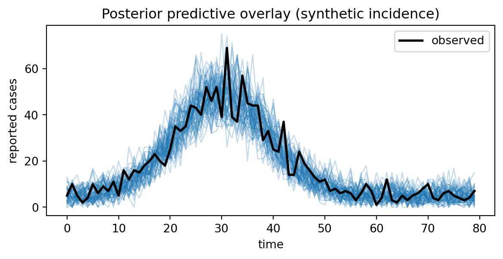
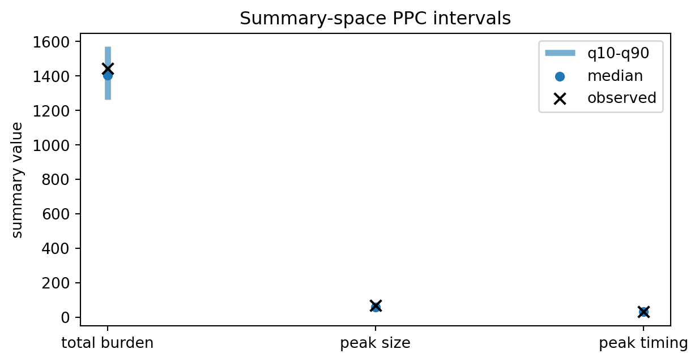
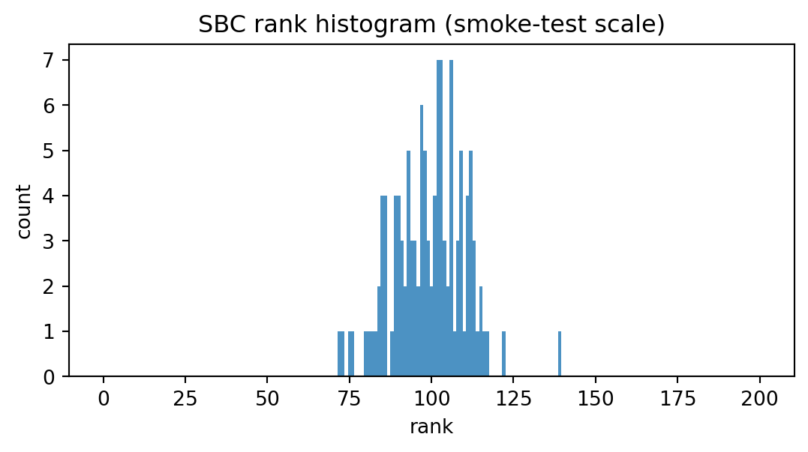
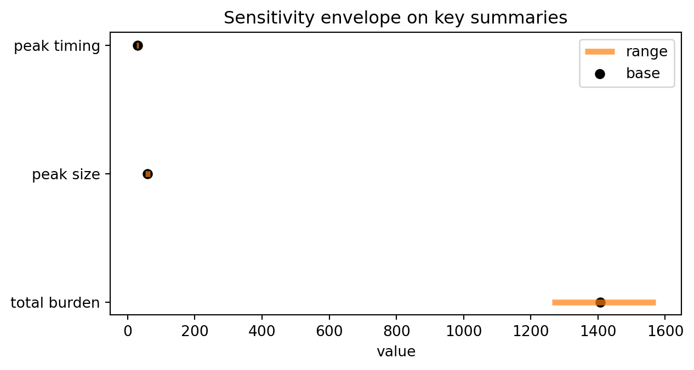

import numpy as np
from diff_epi_inference import (
plot_ppc_overlay,
plot_rank_histogram,
plot_sensitivity_ranges,
plot_summary_intervals,
)11 Validation and robustness
This chapter collects a repeatable validation workflow you can apply to any inference method in this handbook. It is intentionally method-agnostic: you can use the same checks for classical MCMC, variational inference, ABC, and modern simulation-based inference. The core workflow aligns with simulation-based calibration and modern MCMC diagnostics (Talts et al. 2020; Vehtari et al. 2021).
We focus on three pillars:
- Posterior predictive checks (PPC) — can the fitted model reproduce key features of the observed data?
- Simulation-based calibration (SBC) — does the full inference pipeline recover the correct posterior when the model is true?
- Sensitivity analysis — how brittle are your conclusions to modelling choices (priors, summaries, discrepancy, misspecification)?
Important
Diagnostics can tell you that something is wrong, but they rarely tell you what to change. Treat them as part of an iterative loop: model → fit → diagnose → revise.
11.1 A validation workflow (checklist)
When you build a new inference pipeline, write down answers to these explicitly:
- What are the scientific quantities of interest? (parameters, forecasts, counterfactuals)
- What would “bad” look like? (systematic bias, undercoverage, overconfidence, wrong tails)
- What are your minimum diagnostics?
- PPC on the raw data scale (or on domain-relevant summaries)
- a small calibration / coverage smoke test on synthetic data
- What are your sensitivity axes? (prior width, observation model, summaries, simulator mismatch)
- What will you do if the checks fail? (revise model, increase simulation budget, change summaries, change inference method)
In earlier chapters we already used:
- PPC overlays in the classical baselines,
- a tiny calibration/coverage smoke test (SBC-style) on synthetic datasets.
This chapter formalises those patterns.
11.2 Worked diagnostics mini-suite
The cells below create a compact, reproducible validation workflow on synthetic epidemic-like incidence data. The purpose is to show the diagnostics in a single place with visuals.
rng = np.random.default_rng(2026)
t = np.arange(80, dtype=float)
# Synthetic observed series with one main wave.
mu_obs = 5.0 + 45.0 * np.exp(-0.5 * ((t - 30.0) / 9.0) ** 2)
y_obs = rng.poisson(mu_obs)
# Posterior predictive draws: allow moderate scale and local-noise variation.
draws = np.zeros((200, t.size), dtype=float)
for i in range(draws.shape[0]):
scale = float(rng.normal(loc=1.0, scale=0.08))
mu_i = np.clip(scale * mu_obs + rng.normal(0.0, 2.0, size=t.size), 0.0, None)
draws[i] = rng.poisson(mu_i)
fig, ax = plot_ppc_overlay(
t=t,
observed=y_obs,
draws=draws,
title="Posterior predictive overlay (synthetic incidence)",
max_draws=60,
)
fig

def summary(y: np.ndarray) -> np.ndarray:
y = np.asarray(y, dtype=float)
return np.array([np.sum(y), np.max(y), float(np.argmax(y))], dtype=float)
s_obs = summary(y_obs)
s_draws = np.asarray([summary(row) for row in draws], dtype=float)
fig, ax = plot_summary_intervals(
observed=s_obs,
draws=s_draws,
labels=["total burden", "peak size", "peak timing"],
q_low=0.1,
q_high=0.9,
title="Summary-space PPC intervals",
)
fig

# Tiny SBC-style rank check in one dimension.
n_datasets = 120
n_post = 200
ranks = np.zeros(n_datasets, dtype=int)
for i in range(n_datasets):
theta_true = float(rng.normal(0.0, 1.0))
# Deliberately simple approximate posterior family for demonstration.
post_draws = rng.normal(loc=theta_true + rng.normal(0.0, 0.08), scale=0.9, size=n_post)
ranks[i] = int(np.sum(post_draws < theta_true))
fig, ax = plot_rank_histogram(
ranks,
n_ranks=n_post + 1,
title="SBC rank histogram (smoke-test scale)",
)
fig

low = np.quantile(s_draws, 0.1, axis=0)
base = np.median(s_draws, axis=0)
high = np.quantile(s_draws, 0.9, axis=0)
fig, ax = plot_sensitivity_ranges(
labels=["total burden", "peak size", "peak timing"],
low=low,
base=base,
high=high,
title="Sensitivity envelope on key summaries",
)
fig

11.3 1) Posterior predictive checks (PPC)
A posterior predictive check asks:
If (^{(m)}p(y_{})) and (y{(m)}p(y{(m)})), do the replicated datasets (y^{(m)}) look like (y_{}) in the ways we care about?
11.3.1 What PPCs can and cannot tell you
PPCs are good at detecting:
- gross model mismatch (wrong scale, wrong temporal structure),
- mis-specified observation noise (too smooth / too noisy),
- missing mechanisms that affect salient features (timing of peak, tail decay).
PPCs are not a guarantee that:
- parameters are identifiable,
- posteriors are calibrated,
- uncertainty is correctly quantified.
A model can pass a coarse PPC while still producing overconfident posteriors.
11.3.2 Choosing PPC statistics
A practical PPC uses a small set of interpretable features (T(y)), for example:
- total burden (_t y_t)
- peak height (_t y_t)
- peak timing (_t y_t)
- growth rate early in the epidemic
- autocorrelation / day-of-week effects (if relevant)
Then compare (T(y_{})) to the distribution of (T(y^{(m)})).
Note
Many of the PPC plots in this handbook use simple predictive envelopes: e.g. 5–95% bands over time. That is often enough to catch glaring problems.
11.4 2) Simulation-based calibration (SBC)
SBC evaluates the end-to-end pipeline (prior + simulator + inference + posterior). The core idea is:
- Draw (^p())
- Draw synthetic data (yp(y))
- Run your inference method to get draws (^{(m)} p(y^)) (or an approximation)
- Compute the rank statistic of (^) among ({^{(m)}})
If the whole pipeline is correct (and your sampler/estimator is accurate), the rank statistics are uniform.
11.4.1 Rank histograms and coverage
Two lightweight SBC summaries:
- Rank histograms: uniform is good; U-shaped suggests under-dispersed posteriors; dome-shaped suggests over-dispersed posteriors; skew suggests bias.
- Empirical coverage: across synthetic datasets, does a nominal 90% interval contain (^) about 90% of the time?
In the early chapters we used a coverage smoke test as a fast proxy for full SBC. The trade-off is compute:
- full SBC: stronger but expensive
- coverage smoke tests: weaker but cheap and surprisingly effective for catching obvious bugs
Warning
SBC only tests calibration under the assumed model. If the simulator is misspecified relative to reality, a perfectly calibrated posterior for the wrong model can still be scientifically misleading.
11.5 3) Sensitivity analysis
Sensitivity is about stress-testing your conclusions against plausible modelling choices. It is not one thing; it is a family of tests.
11.5.1 3.1 Prior sensitivity
Questions to ask:
- If I widen/narrow the prior, do posterior conclusions shift drastically?
- Are posterior intervals dominated by the prior? (a sign of weak identifiability)
- Are conclusions driven by arbitrary bounds (e.g. truncations)?
Practical recipe:
- choose 2–3 prior variants (e.g. base, wider, narrower)
- rerun the pipeline and compare posterior summaries for the scientific targets
- rerun PPCs: if you change priors but PPCs are unchanged, that can indicate the data are informative; if PPCs deteriorate, priors may be preventing fit
11.5.2 3.2 Summary selection sensitivity (ABC / SBI)
If your pipeline uses summaries (s(y)), sensitivity can be severe:
- small changes in summaries can change identifiability
- summaries can discard information needed to recover key parameters
Practical recipe:
- try multiple summary sets (e.g. basic moments vs adding peak timing / early growth)
- check (i) calibration/coverage on synthetic data and (ii) PPCs on held-out synthetic datasets
11.5.3 3.3 Simulator discrepancy and misspecification
Common misspecification sources in epidemic models:
- reporting rate varies over time
- delays are mis-modelled
- contact patterns or interventions not captured
- structural mismatch between the chosen compartmental model and reality
Practical recipe:
- add a simple discrepancy term (e.g. extra observation noise, a time-varying reporting factor)
- repeat PPCs and check whether predictive fit improves without producing nonsensical parameter posteriors
11.6 Key takeaways
- PPC, SBC-style checks, and sensitivity analysis should be treated as a single validation workflow.
- Good chain diagnostics do not guarantee scientific validity; calibration and misspecification checks remain essential.
- Lightweight smoke diagnostics are useful in CI, but should be complemented by deeper offline validation.
Talts, Sean, Michael Betancourt, Daniel Simpson, Aki Vehtari, and Andrew Gelman. 2020. “Validating Bayesian Inference Algorithms with Simulation-Based Calibration.” arXiv Preprint arXiv:1804.06788.
Vehtari, Aki, Andrew Gelman, Daniel Simpson, Bob Carpenter, and Paul-Christian Bürkner. 2021. “Rank-Normalization, Folding, and Localization: An Improved \(\hat{R}\) for Assessing Convergence of MCMC.” Bayesian Analysis 16 (2): 667–718.